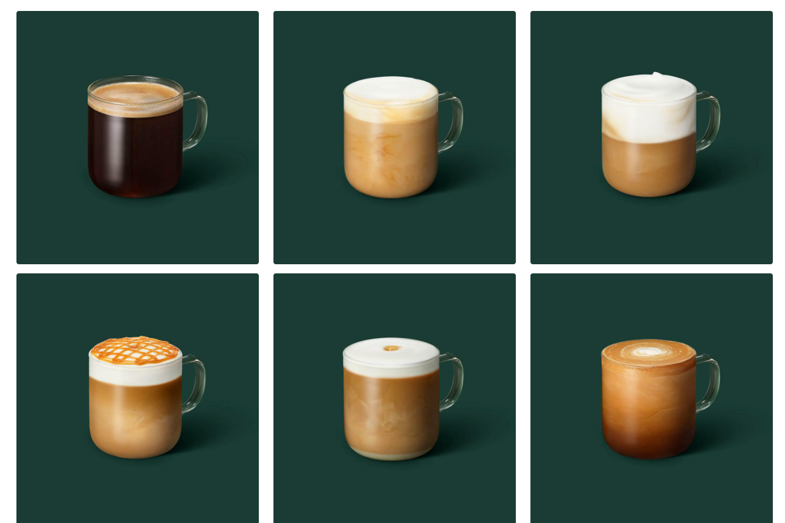
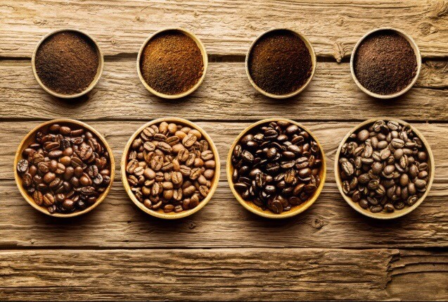
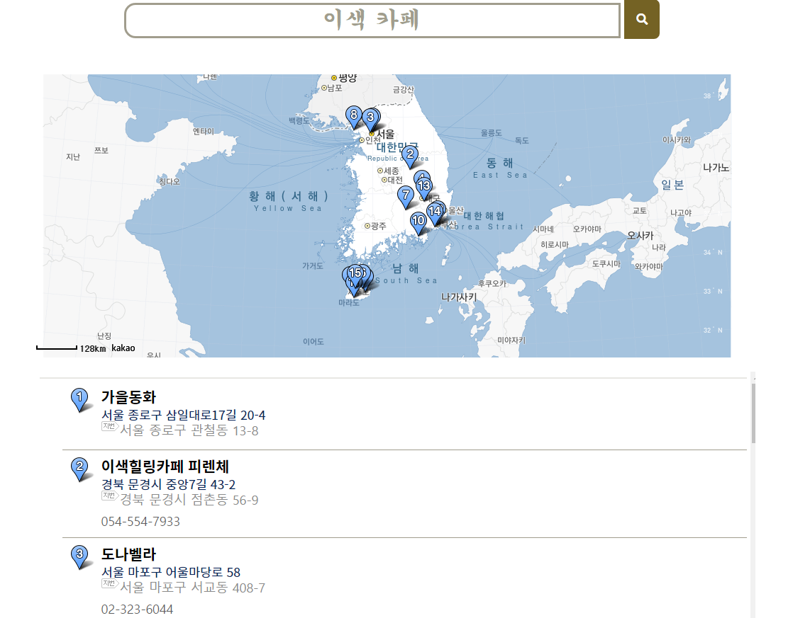

Coffee menu
커피로 만든 18가지의 음료.
에스프레소 6가지, 콜드브루 6가지, 프라푸치노 6가지
다양한 음료를 갤러리 형식으로 보여 드립니다.

Coffee Beans
8가지의 원두를 소개 해드립니다.
브라질 세하도, 인도네시아 만델링, 콜롬비아 수프리모, 과테말라 안티구아, 탄자니아AA, 코스타리카 따라주, 에티오피아 예가체프, 엘살바도르

Coffee Map
카페 위치를 보여드립니다.
여러가지 키워드로 전국 카페를 추천하고 위치를 알려 드립니다.
